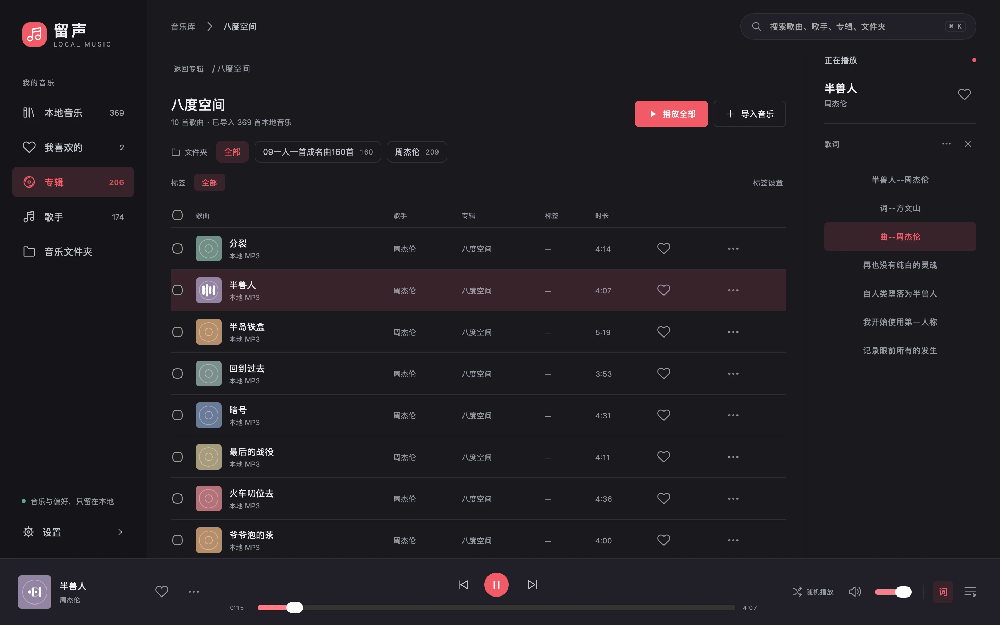

按你的习惯，找到音乐
文件夹已经分好类，就直接按文件夹听。也能按专辑、歌手浏览，用收藏和标签留下自己的偏爱。
本地 MP3 音乐播放器 · macOS / Windows
那些认真收藏的歌，
一个安静的地方，就够了。
打开你的音乐文件夹，让熟悉的旋律继续。
不用登录，离线聆听，音乐始终在你手里。

留给音乐，刚刚好的空间
从硬盘里的一个文件夹，
到每天想听的那首歌。
文件夹已经分好类，就直接按文件夹听。也能按专辑、歌手浏览，用收藏和标签留下自己的偏爱。
读取本地 LRC 和内嵌歌词，跟随播放高亮。点一句，听那一句；时间有偏差，可以为这首歌单独校准。
歌词可收起 · 单曲时间校准macOS 菜单栏里的小播放器，支持暂停、切歌和播放模式。主界面与播放队列用轻微律动标记当前歌曲。
顺序播放 · 随机播放 · 单曲循环导入时建立索引，不复制、不移动、不改写你的 MP3。
不需要账号，收藏、标签和播放进度都保存在这台电脑上。
留声 v0.1.0
从一个文件夹开始。
留声播放你已有的本地 MP3，不提供在线曲库或联网歌词搜索。歌词来自同目录同名的 LRC 文件，或 MP3 内嵌歌词。
不会。导入只建立曲库索引。移除音乐来源不会删除原文件；刷新曲库会清理已经不存在的歌曲记录。目录离线或扫描失败时会保留记录。
打开 DMG，将「留声」拖入 Applications。当前版本采用本地签名，尚未公证；若系统阻止打开，请确认文件来自本项目，再按 macOS「系统设置 → 隐私与安全性」中的提示处理。无需全局关闭系统安全保护。
一样。在「设置 → 外观」中切换；曲库、歌词、收藏和队列共用同一套功能，播放也不会中断。
当前支持本地 MP3。macOS 通用包同时包含 arm64 和 x86_64，最低 macOS 12。Windows 10 / 11 x64 可按指南构建，运行需要 WebView2；目前尚未提供官网 Windows 安装包。